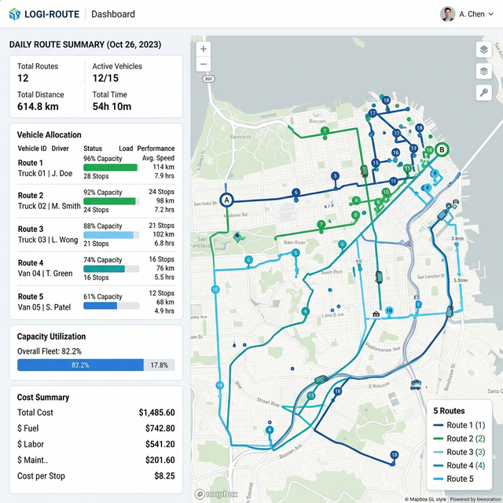

Fleet Resource Allocation and Optimization
Optimization model for allocating vehicles, routes, and capacity under operational constraints and demand scenarios.
Skills: Optimization, Linear Programming, Operations Research, Scenario Analysis